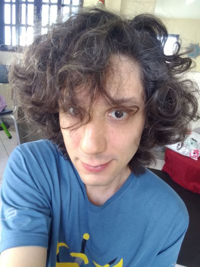

Origem e missão
O Laboratório Integrável surgiu em 2022 como um endereço de e-mail para organizar discussões sobre pequenos projetos e atividades discentes. Com o crescimento dos projetos e o aumento no fluxo de materiais, consolidou-se como um espaço integrador dedicado ao acesso aberto a recursos virtuais de Ciências e Matemática, valorizando a singularidade de sua autoria neurodivergente.
Sobre

Emanuelly é docente do IFRJ com licenciatura em Matemática (USP), Mestrado (UNESP) e Doutorado (UNICAMP), ambos em Ensino de Ciências e Matemática, com especialização em Informática aplicada à Educação (IFRJ), cursando licenciatura em Química (IFRJ) e especialização em Gestão Escolar (IFFar).
Textos acadêmicos
Dados das nossas publicações e segunda via dos arquivos (caso o link original não esteja mais ativo).2011
Evento e sede: III Enrede (Encontro da rede de professores, pesquisadores e licenciandos de Física e de Matemática) realizado na UFSCar de São CarlosData: 25 e 26 de Novembro de 2011
Link do evento: https://sites.google.com/site/observatoriodaeducacaoufscar/eventos/iii-enrede
Página de trabalhos publicados: https://sites.google.com/site/observatoriodaeducacaoufscar/eventos/iii-enrede/6-trabalhos-completos
Título: Aulas de Geometria e seus Ambientes: desde um teatro de arena até uma aula digital
Palavras-chave: Aula de Geometria; Recursos; Atividades dinãmicas
Autores: Marcos Henrique de Paula Dias da Silva; Theófilo Satoshi Okada; Fernando Yoshio Nawate
2012
Evento e sede: IV Jornada Nacional de Educação Matemática e a XVII Jornada Regional de Educação Matemática realizado na Universidade de Passo FundoData: 06 a 09 de Maio de 2012
Link do evento: https://www.upf.br/jem/edicoes-anteriores/edicao-2012
Página de trabalhos publicados: https://www.upf.br/jem/edicoes-anteriores/edicao-2012/anais
Título: Uma abordagem diferenciada para o ensino de Matemática
Palavras-chave: Estimulo; Extensão; Sala de aula
Autores: Marcos Henrique de Paula Dias da Silva; Luana de Souza Pires; Esther Pacheco de Almeida Prado Evento e sede: I Encontro PIBID USP realizado na USP campus Butantã
Data: 23 de Junho de 2012
Link do evento: http://www4.fe.usp.br/eventos/evento?evento=819
Página de trabalhos publicados: https://repositorio.usp.br/item/002334951
Título: Exploração Estelar – Uma mediação utilizando computadores
Palavras-chave: Atividades Matemáticas; Computadores; Jogo
Autores: Thássia Rafaelo Camilo Câmara; Marcos Henrique de Paula Dias da Silva; Esther Pacheco de Almeida Prado; Maria Laura Trindade Evento e sede: IV Enrede (Encontro da rede de professores, pesquisadores e licenciandos de Física e de Matemática) realizado na UFSCar de São Carlos
Data: 09 e 10 de Novembro de 2012
Link do evento: https://sites.google.com/site/ivenrede/home
Página de trabalhos publicados: https://sites.google.com/site/ivenrede/trabalhos-completos
Título: TrigoDuel, a Estratégia por trás de uma Grande Batalha
Palavras-chave: Jogo; Trigonometria; Atividades suplementares
Autores: Marcos Henrique de Paula Dias da Silva
2013
Evento e sede: XI ENEM (Encontro Nacional de Educação Matemática) realizado na PUC CuritibaData: 18 a 21 de Julho de 2013
Link do evento: http://enem2013.pucpr.br/
Página de trabalhos publicados: http://sbem.iuri0094.hospedagemdesites.ws/anais/XIENEM/autores_m.html
Título: RPG na escola, e agora?
Palavras-chave: RPG; Mediador; Ensino de Matemática; Ensino-Aprendizagem
Autores: Thássia Rafaelo Camilo Câmara; Marcos Henrique de Paula Dias da Silva Evento e sede: XI ENEM (Encontro Nacional de Educação Matemática) realizado na PUC Curitiba
Data: 18 a 21 de Julho de 2013
Link do evento: http://enem2013.pucpr.br/
Página de trabalhos publicados: http://sbem.iuri0094.hospedagemdesites.ws/anais/XIENEM/autores_m.html
Título: Exploração Halloween, um exemplo de que não é preciso saber programar para desenvolver um jogo virtual
Palavras-chave: Jogo Virtual; Professores de Educação Básica; Situação Desafiadora
Autores: Marcos Henrique de Paula Dias da Silva; Thássia Rafaelo Camilo Câmara Evento e sede: VII CIBEM (Congreso Iberomericano de Educación Matemática) realizado em Montevideo – Uruguai
Data: 16 a 20 de Setembro de 2013
Link do evento: http://www.cibem7.semur.edu.uy/home.php
Página de trabalhos publicados: http://www.cibem7.semur.edu.uy/home.php
Título: O que dois gatos, quatro desenhos animados e uma catapulta faziam na escola?
Palavras-chave: Extensão das Aulas; Jogos; Ensino de Matemática
Autores: Marcos Henrique de Paula Dias da Silva Evento e sede: VII CIBEM (Congreso Iberomericano de Educación Matemática) realizado em Montevideo – Uruguai
Data: 16 a 20 de Setembro de 2013
Link do evento: http://www.cibem7.semur.edu.uy/home.php
Página de trabalhos publicados: http://www.cibem7.semur.edu.uy/home.php
Título: Quebra-cabeças do Teorema das 4 Texturas
Palavras-chave: Jogo; Alunos com Necessidades Especiais; Ensino de Matemática e Geografia
Autores: Marcos Henrique de Paula Dias da Silva Evento e sede: VII CIBEM (Congreso Iberomericano de Educación Matemática) realizado em Montevideo – Uruguai
Data: 16 a 20 de Setembro de 2013
Link do evento: http://www.cibem7.semur.edu.uy/home.php
Página de trabalhos publicados: http://www.cibem7.semur.edu.uy/home.php
Título: Houston, we have a problem
Palavras-chave: Improviso; Jogos; Educação Matemática
Autores: Marcos Henrique de Paula Dias da Silva Evento e sede: XVI SIM (Simpósio de Matemática para a Graduação) realizado na USP São Carlos
Data: 2013
Link do evento: http://sim.icmc.usp.br/
Página de trabalhos publicados: https://repositorio.usp.br/item/002408150
Título: Kawabanga
Palavras-chave:
Autores: Marcos Henrique de Paula Dias da Silva; Esther Pacheco de Almeida Prado
2014
Evento e sede: XVII SIM (Simpósio de Matemática para a Graduação) realizado na USP São CarlosData: 26 a 28 de Agosto 2014
Link do evento: http://sim.icmc.usp.br/2014
Página de trabalhos publicados: https://repositorio.usp.br/item/002507706
Título: Resident Evil e os gráficos mal ditos
Palavras-chave:
Autores: Marcos Henrique de Paula Dias da Silva; Miriam Cardoso Utsumi Evento e sede: VII Semana da Matemática realizada pela Universidade Federal Fluminense
Data: 16 a 18 de Outubro de 2014
Link do evento: http://semanamatematicauff2014.weebly.com/
Página de trabalhos publicados: http://semanamatematicauff2014.weebly.com/cronograma-e-inscriccedilotildees-nas-atividades.html
Título: Jogos inclusivos para ensino de matemática através de atividades psicomotoras
Palavras-chave: Jogos inclusivos; Ensino de Matemática; Alunos com necessidades especiais
Autores: Marcos Henrique de Paula Dias da Silva Evento e sede: VII Semana da Matemática realizada pela Universidade Federal Fluminense
Data: 16 a 18 de Outubro de 2014
Link do evento: http://semanamatematicauff2014.weebly.com/
Página de trabalhos publicados: http://semanamatematicauff2014.weebly.com/cronograma-e-inscriccedilotildees-nas-atividades.html
Título: Houston, we have a problem
Palavras-chave: Improvisação; Jogos; Educação Matemática
Autores: Marcos Henrique de Paula Dias da Silva Evento e sede: V Jornada das Licenciaturas da USP e IX SELIC (Semana da Licenciatura) realizada na USP de São Carlos
Data: 23 e 24 de Outubro de 2014
Link do evento: http://vjornadalicenciaturas.icmc.usp.br/
Página de trabalhos publicados: http://vjornadalicenciaturas.icmc.usp.br/CD/index_01.htm
Título: Houston, we have a problem
Palavras-chave: Improviso; Jogos; Educação Matemática
Autores: Marcos Henrique de Paula Dias da Silva
2015
Evento e sede: 5o Simpósio Aprender com Cultura e Extensão, realizado na USP de São CarlosData: 17 e 18 de Novembro de 2015
Link do evento: https://prceu.usp.br/aprender/simposio/
Página de trabalhos publicados: https://prceu.usp.br/aprender/simposio/resumo-dos-projetos-da-area-de-exatas-5o-simposio-2/
Títulos: Elaboração de jogos através da adaptação e do aprimoramento de ferramentas gratuitas para a matemática no Ensino Médio e Minicurso: criando jogos no apresentador de slides
Palavras-chave: Jogos; Ensino; Apresentador de slides
Autores: Marcos Henrique de Paula Dias da Silva; Esther Pacheco de Almeida Prado
2017
Evento e sede: IV ERMAC (Encontro Regional de Matemática Aplicada e Computacional) na Faculdade de Ciências da UNESP de BauruData: 02 a 05 de Maio de 2017
Link do evento: https://www.fc.unesp.br/#!/departamentos/matematica/eventos2341/ermac/pagina-inicial/
Página de trabalhos publicados: https://www.fc.unesp.br/Home/Departamentos/Matematica/ermac/caderno-ermac_2017.pdf
Título: Jogo digital para o ensino de métodos numéricos
Palavras-chave: Jogo Digital; Ensino; Métodos Numéricos
Autores: Marcos Henrique de Paula Dias da Silva Evento e sede: VI CBE (Congresso Brasileiro de Educação), realizado pela Faculdade de Ciências da UNESP de Bauru
Data: 26 a 29 de Julho de 2017
Link do evento: http://cbe.fc.unesp.br/2017/
Página de trabalhos publicados: http://cbe.fc.unesp.br/2017/
Título: Computadores versus seres humanos: percepções de profissionais da Educação
Palavras-chave: Pensamento Computacional; Profissionais da Educação; Ciência da Computação
Autores: Katerine Edith Tobio Gutierrez; Marcos Henrique de Paula Dias da Silva Periódico: C.Q.D. – Revista Eletrônica Paulista de Matemática, ISSN 2316-9664, 2017
Data: 2017
Link do periódico: https://www.fc.unesp.br/#!/departamentos/matematica/revista-cqd/sobre/
Publicação do periódico: https://www.fc.unesp.br/#!/departamentos/matematica/revista-cqd/edicoes/
Título: A aprendizagem de métodos numéricos com o jogo digital Handles in Scratch 2.0
Palavras-chave: Jogo digital; Curva de aprendizagem; Métodos Numéricos
Autores: Marcos Henrique de Paula Dias da Silva
2018
Evento e sede: V ERMAC (Encontro Regional de Matemática Aplicada e Computacional) na Faculdade de Ciências da UNESP de BauruData: 06 a 08 de Junho de 2018
Link do evento: https://www.fc.unesp.br/#!/departamentos/matematica/eventos2341/ermac-2018/pagina-inicial/
Página de trabalhos publicados: https://drive.google.com/file/d/1-8SZZnioKApdmQG6BaOTltJARzfwAB9P/view?usp=sharing
Título: A Matemática no coração dos jogos digitais: uma releitura do trabalho de Michael R. Fellows
Palavras-chave: Ensino; Matemática Discreta; Jogos Digitais
Autores: Marcos Henrique de Paula Dias da Silva Evento e sede: II EEC (Encontro de Educadores de Ciências) realizado no CDCC (Centro de Divulgação Científica e Cultural) da USP em São Carlos
Data: 14 e 15 de Setembro de 2018
Link do evento: https://cdcc.usp.br/eec/
Página de trabalhos publicados: https://sites.usp.br/cdcc/wp-content/uploads/sites/512/2019/09/ANAIS-II-EEC-2018.pdf
Título: Alice no país do Quantum: do livro paradidático a um micromundo computacional
Palavras-chave: Mecânica quântica; Digital game-based learning; Micromundo
Autores: Marcos Henrique de Paula Dias da Silva Evento e sede: I CODIRE (I Seminário Internacional Comunidades Digitais em Rede) realizado pela UAb (Universidade Aberta) em Lisboa – Portugal
Data: 22 a 24 de Setembro de 2018
Link do evento: http://portal.uab.pt/noticias/codire-i-seminario-internacional-comunidades-digitais-em-rede/
Página de trabalhos publicados: https://repositorioaberto.uab.pt/handle/10400.2/7744
Título: Game-recover – um videojogo sobre consertar-se
Palavras-chave: Game recover; Dinâmicas interativas
Autores: Marcos Henrique de Paula Dias da Silva Evento e sede: XVIII Semana da Educação Municipal e VIII Congresso Municipal de Educação de Bauru, realizada pela Prefeitura Municipal de Bauru
Data: 01 a 04 de Outubro de 2018
Link do evento: https://sites.bauru.sp.gov.br/semanaeduca/Default.aspx
Página de trabalhos publicados: https://sites.bauru.sp.gov.br/arquivos/website_semanaeduca/arquivos/anais2018.pdf
Título: Frozord: um jogo digital sobre leitura para disléxicos e não disléxicos
Palavras-chave:
Autores: Marcos Henrique de Paula Dias da Silva; Raquel Luciane Calobrizi Evento e sede: XVIII Semana da Educação Municipal e VIII Congresso Municipal de Educação de Bauru, realizada pela Prefeitura Municipal de Bauru
Data: 01 a 04 de Outubro de 2018
Link do evento: https://sites.bauru.sp.gov.br/semanaeduca/Default.aspx
Página de trabalhos publicados: https://sites.bauru.sp.gov.br/arquivos/website_semanaeduca/arquivos/anais2018.pdf
Título: Funções do 1o grau através da contação de histórias
Palavras-chave:
Autores: Luana de Souza Pires; Marcos Henrique de Paula Dias da Silva Evento e sede: XVIII Semana da Educação Municipal e VIII Congresso Municipal de Educação de Bauru, realizada pela Prefeitura Municipal de Bauru
Data: 01 a 04 de Outubro de 2018
Link do evento: https://sites.bauru.sp.gov.br/semanaeduca/Default.aspx
Página de trabalhos publicados: https://sites.bauru.sp.gov.br/arquivos/website_semanaeduca/arquivos/anais2018.pdf
Título: Reconhecimento de padrões, relações de causa-efeito e Sequenciamento na prática do Ensino Fundamental I
Palavras-chave: xxx; xxx; xxx
Autores: Adelle Marques Trevisan; Karina Marques Torquato da Cunha; Marcos Henrique de Paula Dias da Silva Evento e sede: XXX SELMAT (Semana da Licenciatura em Matemática) realizado pela Faculdade de Ciências da UNESP de Bauru
Data: 08 a 11 de Outubro de 2018
Link do evento: https://www.fc.unesp.br/#!/departamentos/matematica/semana-da-licenciatura/apresentacao/
Página de trabalhos publicados: https://drive.google.com/file/d/1HmO2_fbJ39KP-AW5SmFoiuKkEa_G30QM/view
Título: Gafanhotos pulando carniça: um problema da Álgebra de Grupos para o 6o Ano?
Palavras-chave:
Autores: Marcos Henrique de Paula Dias da Silva; xxx; xxx Dissertação de Mestrado: Programa de Pós-Graduação em Educação para a Ciência, da Faculdade de Ciências na UNESP de Bauru em 2018, sob orientação do professor Wilson Massashiro Yonezawa.
Data: 2018
Link do repositório: https://repositorio.unesp.br/items/771533b4-7a8f-42f7-adb6-50de45109cd2
Dissertação publicada: https://repositorio.unesp.br/bitstream/handle/11449/153837/silva_mhpd_me_bauru.pdf
Título: Handles – a trajetória de desenvolvimento de um jogo digital para ensino de Matemática
Palavras-chave: Ensino de Matemática; Jogo digital; Game design
Autores: Marcos Henrique de Paula Dias da Silva Periódico: C.Q.D. – Revista Eletrônica Paulista de Matemática, ISSN 2316-9664, 2017
Data: 2018
Link do periódico: https://www.fc.unesp.br/#!/departamentos/matematica/revista-cqd/sobre/
Publicação do periódico: https://www.fc.unesp.br/#!/departamentos/matematica/revista-cqd/edicoes/
Título: Teoremas secretos de super bomberman
Palavras-chave: Teoremas; Demonstrações; Jogo Digital
Autores: Marcos Henrique de Paula Dias da Silva Evento e sede: III Congresso de Educação PET Pedagogia – XII Amostra de Pesquisas em Educação realizado
Data: 2018
Link do evento: https://www.fclar.unesp.br/#!/graduacao/espaco-do-aluno/pet—programa-de-educacao-tutorial/pedagogia/iii-congresso-de-educacao-pet-pedagogia-2018/
Página de trabalhos publicados: https://www.fclar.unesp.br/#!/graduacao/espaco-do-aluno/pet—programa-de-educacao-tutorial/pedagogia/iii-congresso-de-educacao-pet-pedagogia-2018/anais-do-evento/
Título: O computador como recurso para o desenvolvimento da revisão textual nos Anos Iniciais
Palavras-chave: Computador; Aprendizagem; Revisão textual
Autores: Raquel Luciane Calobrizi; Marcos Henrique de Paula Dias da Silva
2019
Evento e sede: VI ERMAC (Encontro Regional de Matemática Aplicada e Computacional) na Faculdade de Ciências da UNESP de BauruData: 17 a 19 de Junho de 2019
Link do evento: https://www.fc.unesp.br/#!/departamentos/matematica/eventos2341/ermac-2019/pagina-inicial/
Página de trabalhos publicados: https://drive.google.com/file/d/10TKZOqD7_VB-8GMRKUCAMATYMjkDu5Gu/view
Título: ExQuest, um game sobre funções matemáticas em planilhas eletrônicas
Palavras-chave: Ensino; Planilhas Eletrônicas; Jogo Digital
Autores: Marcos Henrique de Paula Dias da Silva Evento e sede: VII SHIAM (Seminário Nacional de Histórias e Investigações de/em Aulas de Matemática), realizado pela Unicamp em Campinas
Data: 17 a 19 de Julho de 2019
Link do evento: https://www.cempem.fe.unicamp.br/shiam
Página de trabalhos publicados: https://www.cempem.fe.unicamp.br/pf-cempem/caderno_de_resumos_vii_shiam_0.pdf
Título: A Fantástica Fábrica de Trigonometria
Palavras-chave:
Autores: Aline Aparecida Miranda Gomes; Marcos Henrique de Paula Dias da Silva Evento e sede: VII SHIAM (Seminário Nacional de Histórias e Investigações de/em Aulas de Matemática), realizado pela Unicamp em Campinas
Data: 17 a 19 de Julho de 2019
Link do evento: https://www.cempem.fe.unicamp.br/shiam
Página de trabalhos publicados: https://www.cempem.fe.unicamp.br/pf-cempem/caderno_de_resumos_vii_shiam_0.pdf
Título: Entre a Escola e o Laboratório: os testes de um jogo digital para Ensino de Matemática
Palavras-chave:
Autores: Anderson Aparecido do Espirito Santo; Marcos Henrique de Paula Dias da Silva Evento e sede: VII SHIAM (Seminário Nacional de Histórias e Investigações de/em Aulas de Matemática), realizado pela Unicamp em Campinas
Data: 17 a 19 de Julho de 2019
Link do evento: https://www.cempem.fe.unicamp.br/shiam
Página de trabalhos publicados: https://www.cempem.fe.unicamp.br/pf-cempem/caderno_de_resumos_vii_shiam_0.pdf
Título: BesouriZ: Multiplicação através da soma de besouros
Palavras-chave:
Autores: Marcos Henrique de Paula Dias da Silva; Alessandra Daniele Messali Picharillo Evento e sede: VII CBE (Congresso Brasileiro de Educação), realizado pela Faculdade de Ciências da UNESP de Bauru
Data: 22 a 25 de Julho de 2019
Link do evento: http://cbe.fc.unesp.br/cbe2019/
Página de trabalhos publicados: http://cbe.fc.unesp.br/cbe2019/anais/
Título: Perspectivas sobre o estudo e ensino do violino: orquestra, docência e promoção social
Palavras-chave: Ensino de Violino; Promoção Social; Experiência Longitudinal
Autores: Adelle Marques Trevisan; Maria do Carmo Monteiro Kobayashi; Marcos Henrique de Paula Dias da Silva; José Luiz de Oliveira Coutinho Evento e sede: VII CBE (Congresso Brasileiro de Educação), realizado pela Faculdade de Ciências da UNESP de Bauru
Data: 22 a 25 de Julho de 2019
Link do evento: http://cbe.fc.unesp.br/cbe2019/
Página de trabalhos publicados: http://cbe.fc.unesp.br/cbe2019/anais/
Título: A Transposição de Mídias como Recurso para a Revisão Textual no Ensino Fundamental I
Palavras-chave: Transposição de mídias; Revisão textual; Ensino Fundamental I
Autores: Raquel Luciane Calobrizi; Marcos Henrique de Paula Dias da Silva Evento e sede: VII CBE (Congresso Brasileiro de Educação), realizado pela Faculdade de Ciências da UNESP de Bauru
Data: 22 a 25 de Julho de 2019
Link do evento: http://cbe.fc.unesp.br/cbe2019/
Página de trabalhos publicados: http://cbe.fc.unesp.br/cbe2019/anais/
Título: Ábacos para além das contas
Palavras-chave: Ábaco; Ciência da Computação; Interdisciplinaridade
Autores: Marcos Henrique de Paula Dias da Silva; Katerine Edith Tobio Gutierrez Evento e sede: XVI Congresso Nacional de Meio Ambiente realizado no Espaço Cultural da Urca em Poços de Caldas
Data: 24 a 27 de Setembro de 2019
Link do evento: http://www.meioambientepocos.com.br
Página de trabalhos publicados: http://www.meioambientepocos.com.br/anais2019.html
Título: O Potencial dos Modelos de Regressão Linear Múltipla na Correção de Parâmetros de uma Estação de Tratamento de Esgoto
Palavras-chave: Matemática Aplicada à Engenharia; Estação de Tratamento de Esgoto; Modelo Matemático; Correção de Erros
Autores: Marcos Henrique de Paula Dias da Silva; Antonio Marcos Galvez Serra Evento e sede: XVI Congresso Nacional de Meio Ambiente realizado no Espaço Cultural da Urca em Poços de Caldas
Data: 24 a 27 de Setembro de 2019
Link do evento: http://www.meioambientepocos.com.br
Página de trabalhos publicados: http://www.meioambientepocos.com.br/anais2019.html
Título: Regressão Linear Múltipla aplicada à Correção de Parâmetros de Reatores UASB
Palavras-chave: Matemática Aplicada à Engenharia; Estação de Tratamento de Esgoto; Modelo Matemático; Correção de Erros
Autores: Antonio Marcos Galvez Serra; Marcos Henrique de Paula Dias da Silva Evento e sede: XVI Congresso Nacional de Meio Ambiente realizado no Espaço Cultural da Urca em Poços de Caldas
Data: 24 a 27 de Setembro de 2019
Link do evento: http://www.meioambientepocos.com.br
Página de trabalhos publicados: http://www.meioambientepocos.com.br/anais2019.html
Título: Um Modelo Matemático para Prevenção e Correção de Parâmetros Físico-Químicos de uma Estação de Tratamento de Esgoto
Palavras-chave: Matemática Aplicada à Engenharia; Estação de Tratamento de Esgoto; Modelo Matemático; Correção de Erros
Autores: Antonio Marcos Galvez Serra; Marcos Henrique de Paula Dias da Silva Evento e sede: XIX Semana da Educação Municipal e IX Congresso Municipal de Educação de Bauru, realizada pela Prefeitura Municipal de Bauru
Data: 30 de Setembro a 03 de Outubro de 2019
Link do evento: https://sites.bauru.sp.gov.br/semanaeduca/Default.aspx
Página de trabalhos publicados: https://sites.bauru.sp.gov.br/arquivos/website_semanaeduca/arquivos/anais2019.pdf
Título: Azulejaria Portuguesa: a estética europeia em nossa escola
Palavras-chave: Arte-Educação; Ensino Fundamental; Azulejaria Portuguesa
Autores: Adelle Marques Trevisan; Marcos Henrique de Paula Dias da Silva Evento e sede: XIX Semana da Educação Municipal e IX Congresso Municipal de Educação de Bauru, realizada pela Prefeitura Municipal de Bauru
Data: 30 de Setembro a 03 de Outubro de 2019
Link do evento: https://sites.bauru.sp.gov.br/semanaeduca/Default.aspx
Página de trabalhos publicados: https://sites.bauru.sp.gov.br/arquivos/website_semanaeduca/arquivos/anais2019.pdf
Título: Reformulando constructos de questionários Likert: um potencial recurso quantitativo para docentes da Educação Básica
Palavras-chave:
Autores: Marcos Henrique de Paula Dias da Silva Evento e sede: EnCPos (Encontro Científico dos Pós-Graduandos do IMECC), realizado pela Unicamp em Campinas
Data: 07 a 10 de Outubro de 2019
Link do evento: http://www.ime.unicamp.br/~encpos/XIV_EnCPos/
Página de trabalhos publicados: http://www.ime.unicamp.br/~encpos/XIV_EnCPos/BoletimDigital2019/Boletim.pdf
Título: Peças de um quebra-cabeça para demonstrar teoremas
Palavras-chave: Demonstração de teorema; Quebra-cabeça
Autores: Marcos Henrique de Paula Dias da Silva; Samuel Rocha de Oliveira Evento e sede: IX Seminário Interno do PECIM (Programa de Pós-Graduação Multiunidades em Ensino de Ciências e Matemática da UNICAMP), realizado pela Unicamp em Campinas
Data: 21 e 22 de Outubro de 2019
Link do evento: https://www.even3.com.br/ixseminariointernopecim/
Página de trabalhos publicados: https://www.pecim.unicamp.br/node/4
Título: Um quebra-cabeças aberto para a demonstração do Teorema Fundamental do Cálculo
Palavras-chave: Demonstração de teoremas; Cálculo Diferencial e Integral; Quebra-cabeças
Autores: Marcos Henrique de Paula Dias da Silva; Samuel Rocha de Oliveira Periódico: C.Q.D. – Revista Eletrônica Paulista de Matemática, ISSN 2316-9664, 2017
Data: 2019
Link do periódico: https://www.fc.unesp.br/#!/departamentos/matematica/revista-cqd/sobre/
Publicação do periódico: https://www.fc.unesp.br/#!/departamentos/matematica/revista-cqd/edicoes/
Título: A Wild Function Appeared: um jogo digital sobre cálculo diferencial
Palavras-chave: Cálculo diferencial; Jogo digital; Aprendizagem
Autores: Marcos Henrique de Paula Dias da Silva Periódico: Revista Intersaberes, v. 14, n. 32 2019, “Diversidade Educacional”. ISSN 1809-7286. DOI: 10.22169
Data: 2019
Link do periódico: https://www.uninter.com/intersaberes/index.php/revista/issue/view/101
Publicação do periódico: https://www.fclar.unesp.br/#!/graduacao/espaco-do-aluno/pet—programa-de-educacao-tutorial/pedagogia/iii-congresso-de-educacao-pet-pedagogia-2018/anais-do-evento/
Título: A transposição de mídias como recurso para revisão textual no Ensino Fundamental I
Palavras-chave: Ensino da escrita; Revisão textual; Recursos didáticos
Autores: Raquel Luciane Calobrizi; Edson do Carmo Inforsato; Marcos Henrique de Paula Dias da Silva
2020
Evento e sede: xxxData: xxx
Link do evento: xxx
Página de trabalhos publicados: xxx
Título: xxx
Palavras-chave: xxx; xxx; xxx
Autores: Marcos Henrique de Paula Dias da Silva; xxx; xxx Evento e sede: xxx
Data: xxx
Link do evento: xxx
Página de trabalhos publicados: xxx
Título: xxx
Palavras-chave: xxx; xxx; xxx
Autores: Marcos Henrique de Paula Dias da Silva; xxx; xxx Evento e sede: xxx
Data: xxx
Link do evento: xxx
Página de trabalhos publicados: xxx
Título: xxx
Palavras-chave: xxx; xxx; xxx
Autores: Marcos Henrique de Paula Dias da Silva; xxx; xxx Evento e sede: xxx
Data: xxx
Link do evento: xxx
Página de trabalhos publicados: xxx
Título: xxx
Palavras-chave: xxx; xxx; xxx
Autores: Marcos Henrique de Paula Dias da Silva; xxx; xxx Evento e sede: xxx
Data: xxx
Link do evento: xxx
Página de trabalhos publicados: xxx
Título: xxx
Palavras-chave: xxx; xxx; xxx
Autores: Marcos Henrique de Paula Dias da Silva; xxx; xxx Evento e sede: xxx
Data: xxx
Link do evento: xxx
Página de trabalhos publicados: xxx
Título: xxx
Palavras-chave: xxx; xxx; xxx
Autores: Marcos Henrique de Paula Dias da Silva; xxx; xxx Evento e sede: xxx
Data: xxx
Link do evento: xxx
Página de trabalhos publicados: xxx
Título: xxx
Palavras-chave: xxx; xxx; xxx
Autores: Marcos Henrique de Paula Dias da Silva; xxx; xxx Evento e sede: xxx
Data: xxx
Link do evento: xxx
Página de trabalhos publicados: xxx
Título: xxx
Palavras-chave: xxx; xxx; xxx
Autores: Marcos Henrique de Paula Dias da Silva; xxx; xxx Evento e sede: xxx
Data: xxx
Link do evento: xxx
Página de trabalhos publicados: xxx
Título: xxx
Palavras-chave: xxx; xxx; xxx
Autores: Marcos Henrique de Paula Dias da Silva; xxx; xxx Evento e sede: xxx
Data: xxx
Link do evento: xxx
Página de trabalhos publicados: xxx
Título: xxx
Palavras-chave: xxx; xxx; xxx
Autores: Marcos Henrique de Paula Dias da Silva; xxx; xxx Evento e sede: xxx
Data: xxx
Link do evento: xxx
Página de trabalhos publicados: xxx
Título: xxx
Palavras-chave: xxx; xxx; xxx
Autores: Marcos Henrique de Paula Dias da Silva; xxx; xxx Evento e sede: xxx
Data: xxx
Link do evento: xxx
Página de trabalhos publicados: xxx
Título: xxx
Palavras-chave: xxx; xxx; xxx
Autores: Marcos Henrique de Paula Dias da Silva; xxx; xxx Evento e sede: xxx
Data: xxx
Link do evento: xxx
Página de trabalhos publicados: xxx
Título: xxx
Palavras-chave: xxx; xxx; xxx
Autores: Marcos Henrique de Paula Dias da Silva; xxx; xxx